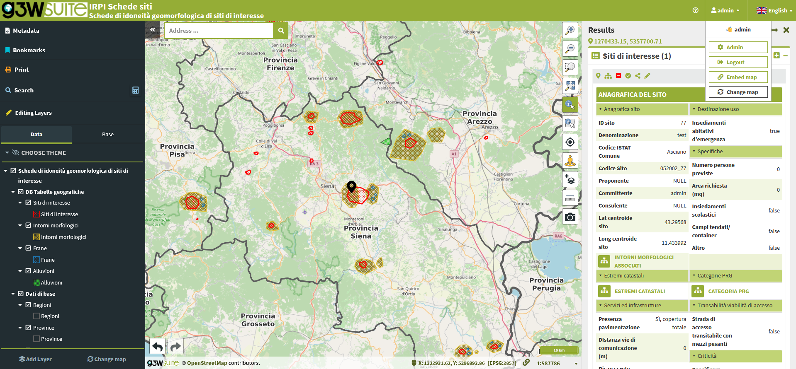
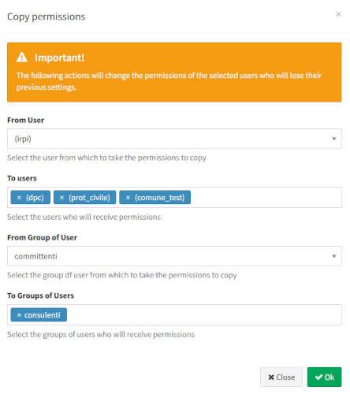
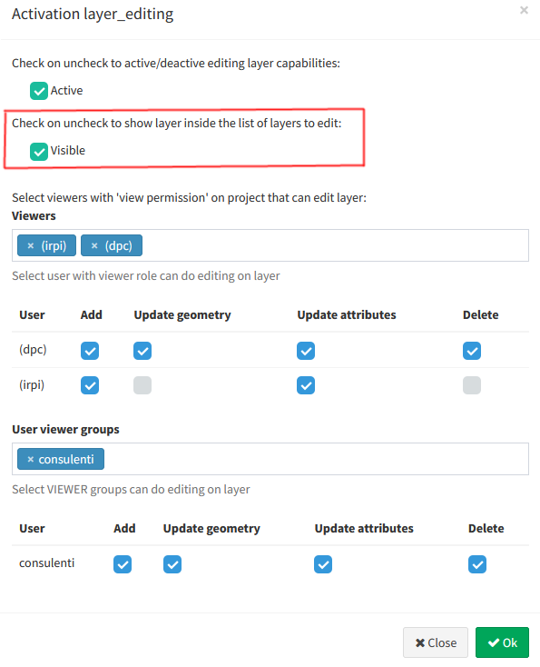
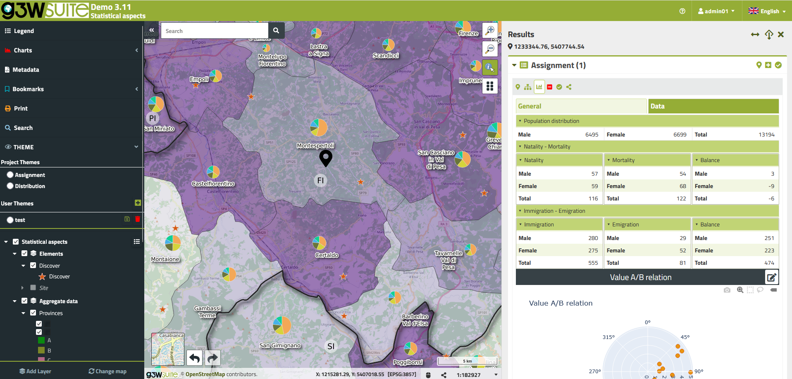
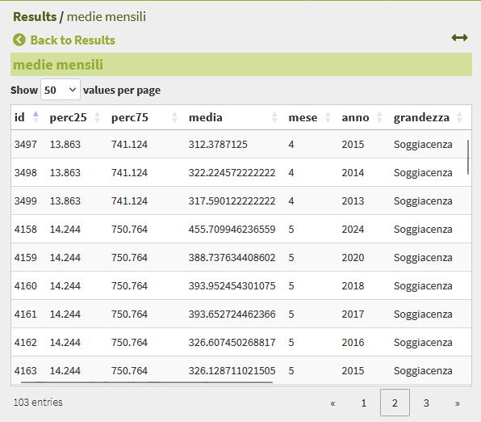
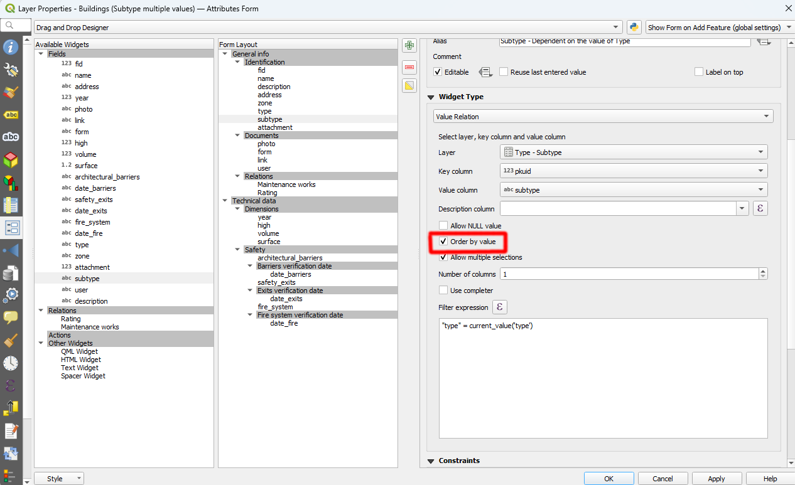
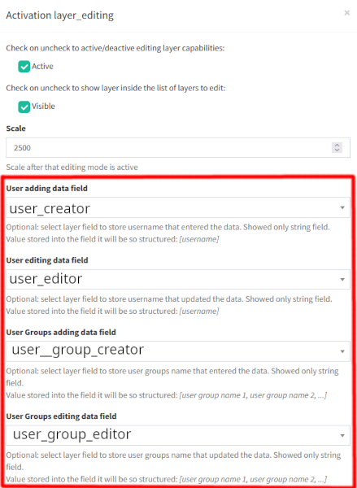
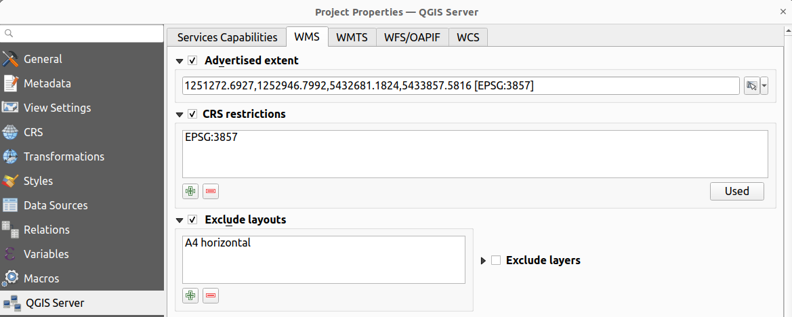

Changelog G3W-Suite 3.9
Release date: 23 January 2025
Changelog for G3W-SUITE 3.9
Version 3.9 of G3W-SUITE is characterized by a great refactoring job.
Among the main innovations we also remember:
- a complete restyling of the cartographic client
-
simpler management of editing permission configurations dedicated to complex projects
-
new editing features inherited from the QGIS project
We hope you enjoy this great work!
Happy mapping with G3W-SUITE!
Sponsor and funder
Open source project · Gis3W main sponsor.
Among the main funder of this version we remember:
General
Feature: A complete restyling of the cartographic client
The cartographic client has undergone a major restyling to make the interface cleaner, more functional and eliminate some problems with the correct display of the various contextual menus.

Feature: Upgrade to Django 4.2
Migration to Django 4.2 and integration of new features in the release
Administration
Feature: Cloning editing powers between users
This function helps in the management of complex projects where users must be able to edit many layers, even with different powers.
Through this function it is possible to clone the editing settings of a user and automatically apply the same settings to other users and/or groups of users.

Feature: Definition of the layers visible in the list of editable layers
In the case of layers with many 1:N relations (even cascade ones), it could be useful not to allow direct editing on the child layers but to allow it only starting from the parent.
This function allows you not to make the child layers visible in the list of editable layers, simplifying the interface and forcing the workflow's user in this direction.

Cartographic client and interaction with the map
Feature: Refactoring
The client has undergone extensive refactoring work in order to improve the graphic appearance, standardize the operational flows and eliminate small bugs present in previous versions.

Feature: Pagination of records of the child layer of 1:N relation
In order to allow the management of large amounts of data, the list of records of a layer related in 1:N mode is displayed on the basis of a pagination system.

Feature: Pagination of search and query results
The pagination system allows you to manage a large number of results without encountering client time-out problems.
Feature: Automatic filter on search results
This feature allows the user to perform a search by automatically activating the filter on the search results.
This will allow only the results obtained to be automatically displayed in the map and attribute table.
Feature: Sorting fields of the attribute table
Inherited from QGIS project!
The ordering of the fields of the layer attributes table defined in QGIS is inherited from the WebGis service
Editing on line
Feature: Value relation widget: “Allow multiple selections” option integrated
Inherited from QGIS project!
With this version it is possible to allow the choice of more than one value among those associated with a field via the “value relation” widget.
Feature: Multirecords editing on 1:N relations
Starting from a parent feature, it will be possible to select some child records and edit some fields for all the selected records.
Not only that, it is also possible to select multiple parent features and modify the attributes for all the records, of the child layer, associated with the selected parents.
Feature: Value relation widget: order setting
Inherited from QGIS project!
The list of values listed in the drop-down menu can be sorted both by key and by value, defining this aspect on the QGIS project.

Feature: Copy and paste between layers
The workflow related to the “copy and paste between layers” operation has been restructured and improved.
The workflow is now identical whether this operation is carried out directly on a layer or on a child layer of a relation.
Feature: Conditional field groups
Inherited from QGIS project!
Visibility management of conditional field groups has been implemented and improved, managing conditions based on Boolean fields or with multiple choices.
Feature: Store of the user groups associated with the user
During the editing phase, not only the individual user can be traced, but also the groups of users associated with him, differentiating the creation and modification of features

Feature: Print layout exclusion
Eredited from QGIS projects
If on the QGIS project I exclude a print layout from those available in the WMS service, this is excluded also from the WebGis service

Minor improvements
Feature: Editing: checkbox widget improved
Feature: Points layers export: add coordinates on CSV
Feature: State of user visible in the users list
For the full detail see the official manual on ReadTheDocs.